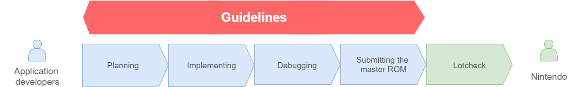

Purpose and content
This document stipulates various rules (Guidelines) that Nintendo Switch™ applications must follow.
Nintendo has established these Guidelines for the following purposes.
- Preventing problems (such as accidents) with commercially released products
- Preventing application designs where the application cannot be played on all systems due to manufacturing differences between said systems
- Ensuring that Nintendo services can operate without problems
- Eliminating application designs that may significantly reduce expected system lifetime
- Maintaining the brand image of the platform by standardizing specifications across all applications
- Ensuring applications comply with contractual obligations, such as including required copyright notices
Before you submit your application to Lotcheck, check that your application complies with all of the required guideline items.
The content of the Guidelines applies to both Nintendo Switch and Nintendo Switch Lite, unless otherwise specified in the Software to Be Tested or Exceptions.
Lotcheck
Lotcheck refers to the certification testing that all applications must pass before being released for a Nintendo platform. Nintendo checks whether applications are adversely affected by different versions of hardware, internal components, or firmware, and whether applications comply with the Guidelines set by Nintendo.
For a list of which guidelines your application must comply with, enter information about your application's specifications into Nintendo Developer Portal (NDP).
For more information, see Lotcheck Procedures > Preparing for Lotcheck > Checking Compliance With Guidelines.
When planning your application, also see the Lotcheck Information articles on NDP to find out about the guidelines with the most violations and other Guidelines-related topics.
Audience
These Guidelines are targeted for anyone involved in application development.
Phases where you should read this document
These Guidelines are intended to be used as a reference during all stages of development, from the application planning stage through master ROM submission to Lotcheck.

Notes
- These Guidelines were established to reduce problems in all aspects of developing and releasing an application. Compliance with these Guidelines, however, does not guarantee that all problems can be avoided.
- When you are planning to develop and release an application, observe all associated laws and regulations in addition to adhering to all requirements in these Guidelines. In addition, make sure you have obtained all necessary rights and permissions from third parties.
- The content of these Guidelines is general in nature, so there may be cases where adherence to them is difficult due to the specifications of an application. In such cases, contact Nintendo in advance and explain your need for an exception. Implementation without full compliance with the Guidelines may be possible as long as the following conditions are met.
- If it can be determined that matters of concern to Nintendo can be handled (or that problems of concern can be avoided) because of how the application is designed
- If Nintendo determines that the problems that result from compliance with a requirement in these Guidelines outweigh the benefits of compliance
- These Guidelines also apply to offline HTML included in your application. Any content you display must, like your application itself, comply with these Guidelines.
- To submit your application to Nintendo for Lotcheck, you must do its final testing in an environment that meets specified conditions, regardless of your application's sales format. For details about these conditions, see NintendoSDK Documents > Testing Applications.
- Each version of these Guidelines has a transition period, after which you are required to comply with the Guidelines in the newest version. See Nintendo Developer Portal > Technical Information > Master Submission Information (https://developer.nintendo.com/group/development/g1kr9vj6/tech-info/master-submission-information) for details of the transition periods for each version.
Applications for China
When testing these Guidelines for applications for China, read all instances of "Nintendo Account" as "account for China."
We have added notes to the guideline items that require special attention in this regard, so be sure to check these notes.
Terms used in these Guidelines
Hardware terms
These Guidelines use the following hardware terms. Hereafter, these Guidelines may use alternate terms rather than the official terms.
| Official term | Alternate terms that may be used in these Guidelines |
|---|---|
| Nintendo Switch™ system | system |
| Nintendo Switch™ Lite system | system |
| Joy-Con™ controllers | Joy-Con controllers |
| Joy-Con™ (R) | Joy-Con (R), right Joy-Con |
| Joy-Con™ (L) | Joy-Con (L), left Joy-Con |
| Joy-Con™ grip | Joy-Con grip |
| Joy-Con™ charging grip | Joy-Con charging grip |
| Joy-Con™ strap | Joy-Con strap |
| Nintendo Switch™ dock | dock |
| Nintendo Switch™ Pro Controller | Nintendo Switch Pro Controller |
| Nintendo Switch™ development hardware | Nintendo Switch devkit, devkit |
Guidelines that do not distinguish between Nintendo Switch systems and Nintendo Switch Lite systems simply use "system."
"Nintendo Switch devkit" refers to ADEV, SDEV, and EDEV hardware. It does not include HDEV hardware. If the Test Method does not specify which type of development hardware to use, you are free to use any of these types of devkits when testing.
Library names and system terms
These Guidelines use the following library names and system terms. Hereafter, these Guidelines may use alternate terms rather than the official terms.
| Alternate terms that may be used in these Guidelines | Official name and definition |
|---|---|
| The Background Contents Asymmetric sync delivery and Transmission (BCAT) system is used to deliver data to the Switch system. | |
| The ec (e-commerce) applet connects to the Nintendo eShop server and displays the Nintendo eShop screen to allow the user to purchase downloadable content and subscription service items directly within an application. | |
| The file system (fs) library provides a means of performing operations on various file systems, including save data and the file system on a development PC. | |
| The human interface device (hid) library provides an API for controlling various human interface devices including gamepads, keyboards, touch screens, and accelerometers. | |
| The local directional network (ldn) library provides features for connecting multiple devices without repeaters or the Internet and conducting communication among the applications running on those devices. | |
| The Nintendo Content Management System (NCMS) is a system for submitting various types of information required for distributing an application on Nintendo eShop. | |
| Nintendo Developer Portal (NDP) is a restricted-access website for developers to get information needed to develop games on Nintendo platforms, submit master ROMs, and perform other related operations. | |
|
Network EXtension (NEX) is a library of Nintendo-provided communication features. |
|
| Nintendo Figurine Platform / NFC Featured Platform (NFP) is a platform that introduces a new kind of gameplay through amiibo character products equipped with NFP tags, which link to the application when that amiibo figure is touched to the Nintendo game system or accessory (sold separately). | |
| The NG word check (ngc) library provides functions to check strings against a profanity list. | |
| The network interface manager (nifm) library provides an API for managing network connections in the NintendoSDK environment. | |
| The NEX server MAnagement System 2 (NMAS2) allows management of Nintendo-provided NEX servers. These servers provide matchmaking, ranking, and data storage services to applications. |
|
|
Network PLatform for Nintendo (NPLN) communicates with game servers provided by Nintendo, providing a means for adding online features like online battles to your application. |
|
|
A web user interface that allows you to customize NPLN services, check aggregated information, and similar operations. |
|
|
Network Service Account (NSA) refers to an account used by various Switch network services such as NPLN and the friends feature. This account is created and used automatically by the operating system. |
|
| The operating environment (oe) library provides features related to the application's operating environment, such as controlling changes in program state and modifying performance configuration. | |
|
The Online title MAnagement System (OMAS) is a web system for requesting network features when developing products that support network services. |
|
| The operating system (os) library provides a useful mechanism for controlling the multithreaded execution of software. | |
| The play data management (pdm) library provides features that obtain play data about applications that have previously been started on the system. | |
| Pia is Nintendo’s peer-to-peer communication library, the name of which is derived from the Japanese katakana spelling of "peer". | |
| The platform (pl) library contains miscellaneous features including those that allow applications to access shared fonts. |
Nintendo platform server environments
There are multiple server environments that provide the various network services on Nintendo platforms.
Only some kinds of hardware are allowed to connect to each server environment. As a rule, only the permitted hardware can access the servers.
For more information, see Independent Server Setup Manual > Server Environments.
How to navigate these Guidelines
Chapters
These Guidelines are organized into chapters by associated features. The individual chapters are described below. Applications that fall under "Applications to Be Tested" must comply with the guidelines given in that chapter.
| Chapter | Applications to Be Tested | Description |
|---|---|---|
| System features | All applications | This chapter covers requirements you must comply with if you use the features provided by the Switch system. |
| Hardware | All applications | This chapter covers requirements you must comply with if you use the hardware built into the Switch system. |
| File system | All applications | This chapter covers requirements you must comply with if you use the file system. |
| Safety | All applications | This chapter covers requirements for promoting a fun and safe experience with the Switch system for users. |
| VR | Applications that use the Toy-Con VR Goggles to support VR |
This chapter contains requirements for application design and development and applies to applications that use the Toy-Con VR Goggles to support VR (Virtual Reality). |
| Play modes | All applications | This chapter covers requirements for application design and development that arise from the differences between the three play modes. |
| Communication features | Applications that use any kind of communication feature. | This chapter covers requirements you must comply with if you use any kind of communication feature. |
| Applications that use accounts | This chapter covers requirements you must comply with if you use accounts. | |
| Applications offering features that become available when the user subscribes to Nintendo Switch Online | This chapter covers requirements you must comply with if you use Nintendo Switch Online. | |
| UGC | Applications that exchange UGC | This chapter covers requirements you must comply with when designing applications that exchange UGC. |
| Patches | Applications that apply patches | This chapter covers requirements you must comply with if you use patches. |
| E-commerce | Applications that use e-commerce | This chapter covers requirements you must comply with if you use e-commerce. |
| Demos | Demo versions of applications | This chapter covers requirements you must comply with if you create demos. |
| Other | All applications | This chapter covers general rules that all developers must comply with when developing Switch applications. |
Guideline Item
Guideline items are written in table format. Each row in the table is used as described below.
Provisional content is marked with "(TBD)".
If the guideline item name contains "(TBD)", it indicates that although that requirement itself exists, the current text of the guideline item includes a large number of provisional or TBD details.
If a guideline's test method states "Check the source code," then there is no established test method. You must make sure that your application complies with the guideline during the implementation stage. You do not need to submit your source code when you submit your master ROM.
Permalinks to guideline items
The heading of each guideline item contains a permanent link to that guideline. Right-click the heading and copy the link to copy this permalink to your clipboard.
Controlling what content is displayed
These Guidelines provide the following two features to let you control what content is displayed.
- Filter by rows
- Highlight by tags
Filter by rows
Filtering by rows lets you expand or collapse the backgrounder, test, or entire guideline item.
Guideline items are split into rows, as shown below.
The upper right of the page holds a menu that lets you filter which rows are displayed.
Clicking the icon on the menu changes it to , and expands those rows of all items on every page of this document. To expand or collapse just one individual guideline item, click the leftmost header column of the guideline. To expand or collapse one individual backgrounder or test, click the / icon for that backgrounder or test.
Highlight by tags
Each guideline item has at least one tag. Selecting a tag in the Tags menu highlights the guideline items which have that tag. You can open the Tags menu by clicking Tags on the left-hand menu pane.
"Most-failed guidelines" tag
Guidelines for which Lotcheck finds a large number of violations are tagged with the "Most-failed guidelines" tag.
Take extra care when reading and testing these guidelines while developing your application.
The Lotcheck Information articles on Nintendo Developer Portal include examples of the most common violations. Nintendo recommends that you also use these articles as reference material.
Document Settings
In the document settings you can access the following features.
- Import/export configuration files
- Export Test Items and Backgrounders
- Printable Page Display Settings
Import/export configuration files
Here you can import or export your filter settings. This feature lets you save your preferred filter settings and reproduce them again later. For example, you can filter down to the set of guideline items your team is checking, then share the filter settings with your team.
Export Test Items and Backgrounders
Here you can take a set of guideline items and export the text of their Test items into an Excel file. This feature outputs each chapter of the Guidelines to a separate worksheet tab within the Excel file.
There is an option to export the Backgrounders along with the Test items.
Printable Page Display Settings
Here you can display a printable version of individual chapters. The printable version retains your filter settings.